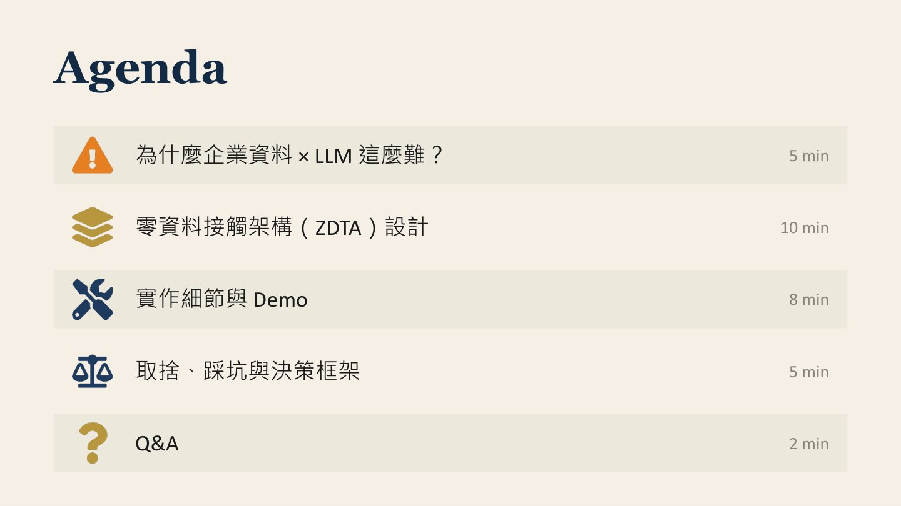
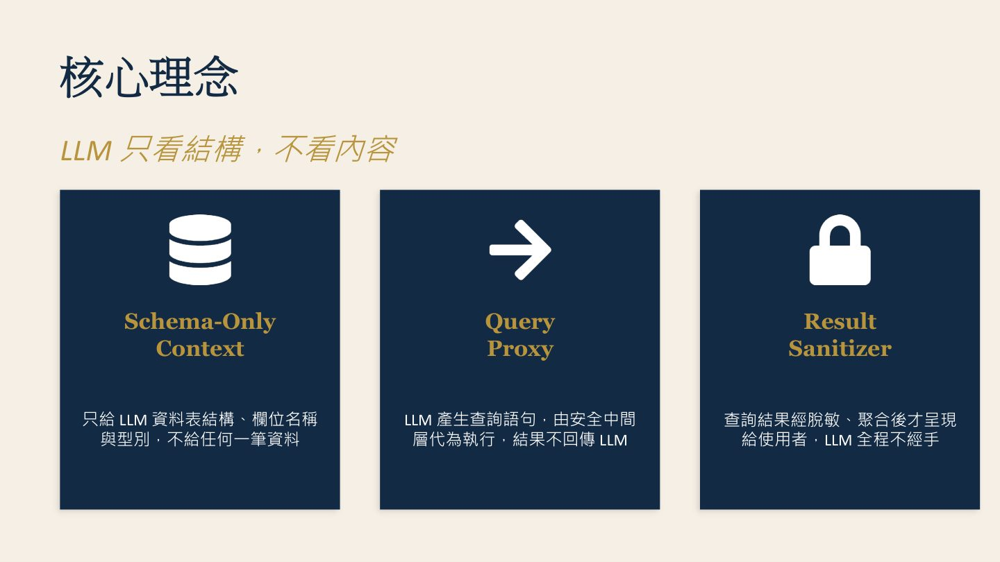
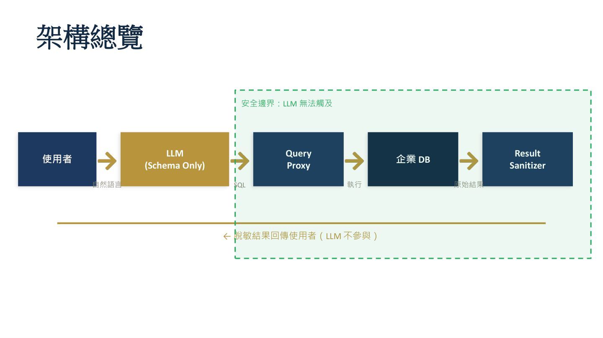
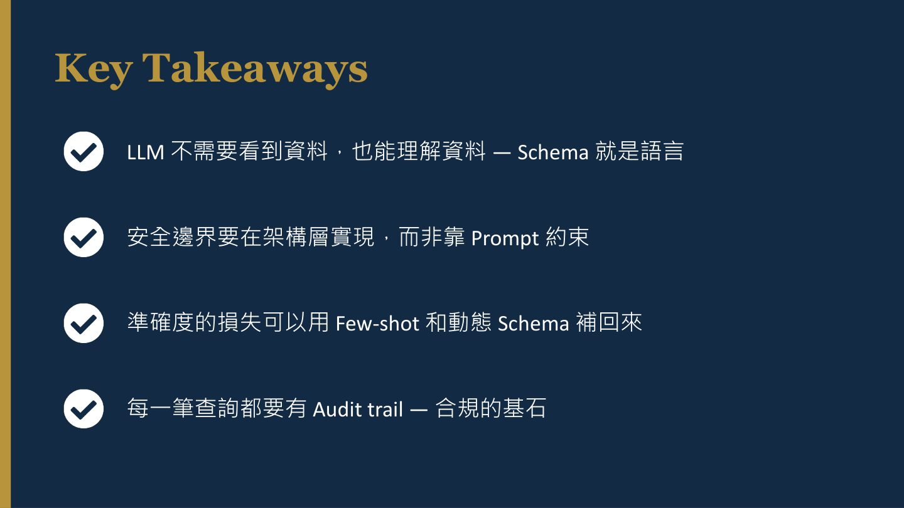

摘要
講者 Chester 提出「零資料接觸架構（Zero Data Touch Architecture, ZDTA）」，解決企業想讓 LLM 理解內部資料、卻又害怕資料外洩與合規風險的核心矛盾。架構核心是讓 LLM 只看到資料表 Schema、由安全中間層（Query Proxy）代為執行查詢語句，再經 Result Sanitizer 脫敏聚合後才呈現給使用者，確保 LLM 全程不接觸任何一筆原始資料。
重點整理
- 核心矛盾：企業想要 LLM 理解資料、自然語言查詢報表，卻害怕資料外流、Prompt injection 洩密與合規風險
- ZDTA 三層架構：Schema-Only Context（只給表結構不給資料）、Query Proxy（LLM 產生查詢由中間層代為安全執行）、Result Sanitizer（結果脫敏聚合後才回傳）
- Query Proxy 以 AST 解析（而非字串比對）做 SQL 白名單驗證、欄位級權限與查詢複雜度限制，防止 Injection
- 準確度實測：RAG（含資料）92 分、ZDTA（Schema Only）78 分、ZDTA + Few-shot 88 分，顯示搭配 Few-shot 範例可大幅補回準確度
- 延遲原本因 Schema 注入增加約 800ms，透過 Schema cache 與 Query plan cache 降至約 200ms 額外延遲
重點圖片／架構圖




企業資料與 LLM 的核心矛盾
講者指出企業一方面想要 LLM 理解自身資料、支援自然語言查詢報表與智慧化業務洞察，另一方面卻害怕資料送到外部模型、遭遇 Prompt injection 洩密，以及合規與稽核上的風險。他也點出現有做法如 RAG（Chunk 仍含原始資料）、Fine-tuning（模型權重內化機密）、On-prem LLM（成本高、能力受限）、Data Masking（遮罩後語意喪失）各有瓶頸，共同問題是 LLM 最終都會「接觸」到原始資料。
零資料接觸架構的三層設計
ZDTA 的核心理念是「LLM 只看結構、不看內容」，由三層組成：Schema-Only Context 只提供資料表結構、欄位名稱與型別給 LLM，不含任何一筆真實資料；Query Proxy 由 LLM 產生查詢語句，交由安全中間層代為執行，查詢結果不會回傳給 LLM；Result Sanitizer 則將查詢結果經脫敏與聚合處理後才呈現給使用者，LLM 全程不經手結果。
Query Proxy 與 Result Sanitizer 的安全機制
Query Proxy 採用 SQL 白名單驗證（僅允許 SELECT）、欄位級權限控制（依角色限制可查詢欄位）、查詢複雜度限制（JOIN 深度、子查詢層數、結果筆數上限），並用 AST 解析而非字串比對來阻擋 LLM 被誘導產生的惡意查詢。Result Sanitizer 則執行 PII 偵測與遮罩、數值聚合、K-Anonymity 驗證（需 ≥5 筆才回傳）與 Audit Log 寫入，確保查詢結果直接從 Sanitizer 送往前端、完全繞過 LLM。
技術實作與 Demo
團隊的技術堆疊包含 Schema Extractor（pg_dump --schema-only 搭配自訂 annotation parser）、LLM Layer（Claude API 搭配 Function Calling 與 System Prompt 注入 Schema）、Query Proxy（Bun、TypeScript、node-sql-parser 做 AST 驗證）、Sanitizer（Presidio 做 PII 偵測搭配自訂 K-Anonymity 模組），並將結構化 log 送至 Loki／Grafana。金融場景 Demo 展示使用者詢問「上季前十大客戶的交易總額趨勢」後，LLM 產生 SQL、Proxy 驗證、資料庫執行、Sanitizer 脫敏聚合，最終前端呈現代碼化客戶名稱與區間化金額的圖表。
取捨、踩坑與適用場景
講者坦承實作過程中踩過幾個坑：Schema 太大導致 Context 爆掉，靠動態 Schema 選取解決；LLM 幻覺出不存在的欄位，靠 Proxy 的 AST 驗證攔截；過度聚合導致結果失去意義，靠分層脫敏規則處理；延遲原本增加約 800ms，靠快取機制降到約 200ms。他建議 ZDTA 適合結構化資料、高度監管產業（金融、醫療）、以查詢為主的需求與已有完善 Schema 文件的場景，但不適合非結構化資料、需要深度推理或即時對話式分析的情境。